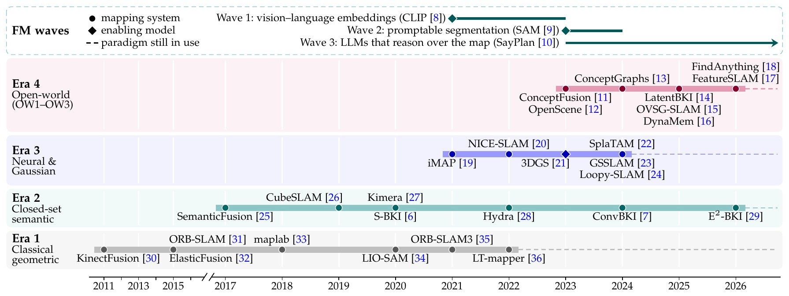
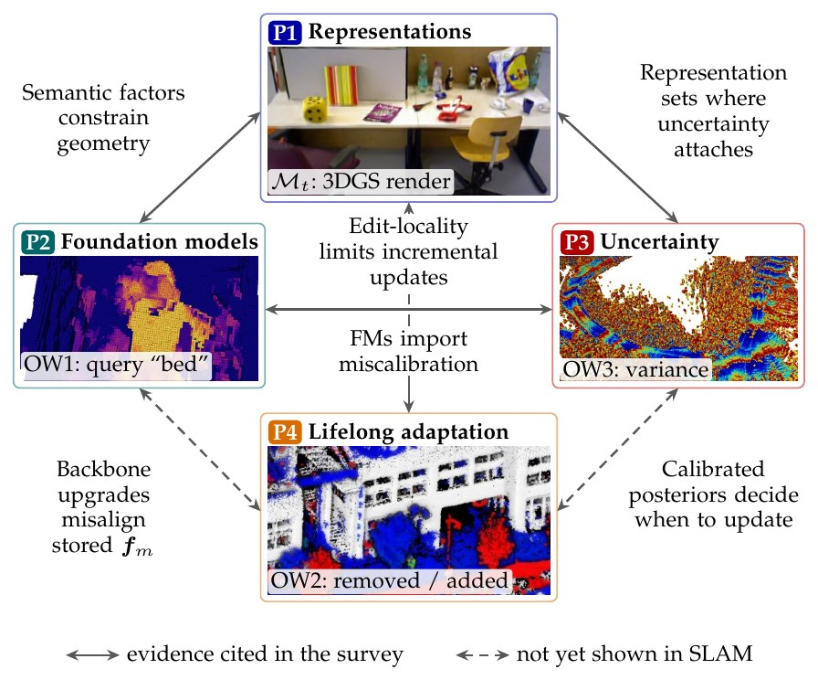
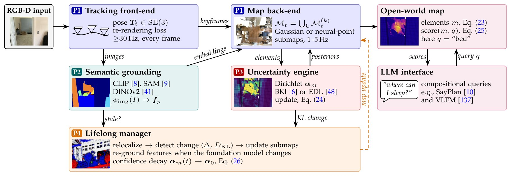
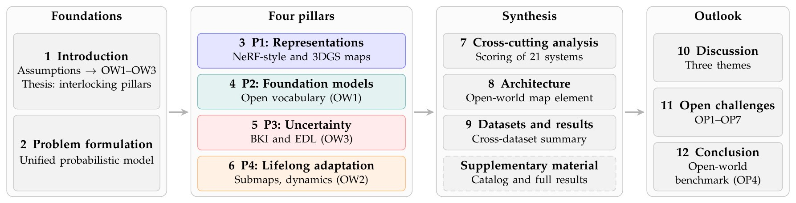

Open vocabulary
Not a fixed taxonomy of K classes: the map answers natural-language queries such as “the red mug on the left shelf”.
Preprint 2026 · Survey
A survey on representations, uncertainty, and lifelong adaptation
1Japan Advanced Institute of Science and Technology 2VNU University of Engineering and Technology
01 · Overview
Semantic SLAM still largely assumes a closed set of categories, a static world and deterministic labels. Four developments each relax one of these assumptions: differentiable scene representations such as neural radiance fields and 3D Gaussian splatting, vision–language foundation models, principled uncertainty quantification, and lifelong mapping. Yet the literature has grown in parallel threads.
This survey argues that these threads are interlocking pillars of a single shift toward open-world semantic SLAM: SLAM with open vocabularies, in non-stationary environments, with calibrated beliefs over geometry and meaning. It gives a unified probabilistic formulation, organizes 81 systems around four pillars, assesses them through 17 explicit claims, shows that no current system addresses all four, and closes with a reference architecture and seven open problems.
Not a fixed taxonomy of K classes: the map answers natural-language queries such as “the red mug on the left shelf”.
Not a time-invariant map: objects move, furniture is rearranged, seasons change, and the map is maintained across sessions.
Not point-estimate labels: every map element carries a calibrated belief over what it is, not only over where it is.

02 · Four pillars

03 · The 81 systems
Every system appears once, under the pillar it primarily advances (Fig. 4). Filter by pillar or group, or search by name or title. Click a system for its reference.
No system matches these filters.
04 · Cross-pillar analysis
21 representative systems scored 0–3 on each pillar (0: not addressed · 1: superficially · 2: a primary contribution · 3: state of the art at publication). The survey's target is at least 2 on every pillar, 8 in total.
05 · 17 claims
Each pillar chapter ends with a critical assessment stated as claims (Table 6). Filter by pillar; claims that feed an open problem link to it.
06 · Research agenda
07 · Reference architecture
Tracking and the map back-end (P1) run at frame and keyframe rate; semantic grounding (P2) produces open-vocabulary embeddings; an uncertainty engine (P3) keeps per-element posteriors; a lifelong manager (P4) detects change and updates submaps; an LLM interface answers compositional queries.


08 · Cite
@misc{canh2026openworld,
title = {Open-World Semantic {SLAM}: A Survey on Representations, Uncertainty, and Lifelong Adaptation},
author = {Canh, Thanh Nguyen and Zhang, Haolan and HoangVan, Xiem and Chong, Nak Young},
note = {Preprint},
year = {2026}
}